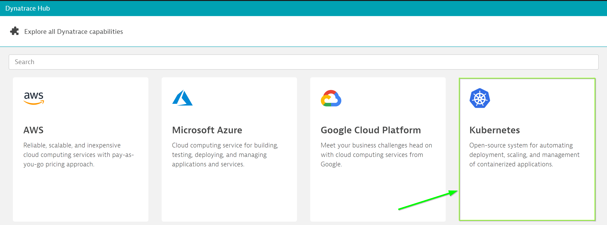

Within your tenant, navigate to Deploy Dynatrace > Kubernetes

Further, click on "Monitor Kubernetes".
Now, from the drop-down, select the following config values: Now, click on for "PaaS Token", select "Create a new PaaS token" and click to open in a new window. Once navigated to the page, click on "Generate Token" to create a token.
Give an appropriate name say "PaaS-k8s" and copy the token value in a temporary file.

Similarly, for "API Token" select "Create a new API token" and click to open in a new window.

NOTE: When selecting the permissions, make sure you have the Access problem and event feed, metrics, and topology under "API v1" setting enabled for the API token.
Dynatrace support multiple deployment strategies to install oneAgent Operator. We will use Helm approach.
Use the following command to install Helm 3. sudo snap install helm --classic
- Once helm is installed, add Dynatrace OneAgent Helm repository as below:
helm repo add dynatrace https://raw.githubusercontent.com/Dynatrace/helm-charts/master/repos/stable- Create a namespace dynatrace which will hold the operator deployment and it's dependencies. To create the namespace, use the command as below:
bash
kubectl create namespace dynatrace
- Create a namespace dynatrace which will hold the operator deployment and it's dependencies. To create the namespace, use the command as below:
- Now, create a values.yml with the text as below: "`bash platform: "kubernetes" operator: image: "" oneagent: name: "oneagent" apiUrl: "https://ENVIRONMENTID.live.dynatrace.com/api" image: "" args:
- –set-app-log-content-access=true env: {} nodeSelector: {} labels: {} skipCertCheck: false disableAgentUpdate: false enableIstio: false dnsPolicy: "" resources: {} waitReadySeconds: null priorityClassName: "" serviceAccountName: "" proxy: "" trustedCAs: "" secret: apiToken: "DYNATRACE_API_TOKEN" paasToken: "PLATFORM_AS_A_SERVICE_TOKEN"
Replace the apiToken and paasToken configurables with the values retrieved earlier and set apiURL to point to your tenant.
For SaaS, configure apiUrl as https://.live.dynatrace.com/api , where ENVIRONMENTID is your tenant-id
For Managed cluster, use apiUrl as https:///io/ /api, where my-server is the domain name/ip of your server and ENVIRONMENTID is your managed environment
Once replaced, save the file.
4. Lastly, run the below command to apply the YAML
bash $ helm install dynatrace-oneagent-operator dynatrace/dynatrace-oneagent-operator -n dynatrace –values values.yaml "`
- –set-app-log-content-access=true env: {} nodeSelector: {} labels: {} skipCertCheck: false disableAgentUpdate: false enableIstio: false dnsPolicy: "" resources: {} waitReadySeconds: null priorityClassName: "" serviceAccountName: "" proxy: "" trustedCAs: "" secret: apiToken: "DYNATRACE_API_TOKEN" paasToken: "PLATFORM_AS_A_SERVICE_TOKEN"
If succesful, you will get a prompt similar to the below and you will see the host appearing when you click on Show Deployment status
NAME: dynatrace-oneagent-operator
LAST DEPLOYED: Wed Mar 03 02:01:30 2021
NAMESPACE: dynatrace
STATUS: deployed
REVISION: 1
TEST SUITE: None
NOTES:
Thank you for installing dynatrace-oneagent-operator.
Your release is named dynatrace-oneagent-operator.
To start the sample-application pods, navigate to /home/ubuntu/k8s folder. Under that folder you would be able to view the yaml files for front-end and mongodb deployment. In order to deploy the services and deployment, run the following commands: kubectl apply -n dynatrace -f app-deployment.yamlkubectl apply -n dynatrace -f mongo-deployment.yamlkubectl apply -n dynatrace -f mongo-service.yamlkubectl apply -n dynatrace -f app-service.yaml This would create the deployment and services for all components for the application.
Now, in order to access the application from outside the k8s cluster, run the below command: kubectl expose deployment/app --type=NodePort --name=model-app -n dynatrace --port 30005 This would create a service which will be accessible from outside the cluster using :30005.
Verify the service is up and running as expected using command below. kubectl describe service model-app -n dynatrace

⚠️ Troubleshooting steps
Now, register an user on the application at http://:30005/register page with the following details:
Name: Guest User
E-Mail Address: guestuser@mybank.com
Password: GuestUser12@
Name: 123456789
As you have completed registering yourself on the application, now login into the app from http://:30005/login with the credentials as below:
E-Mail Address: guestuser@mybank.com
Password: GuestUser12@